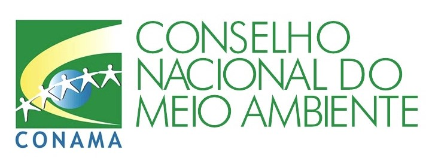
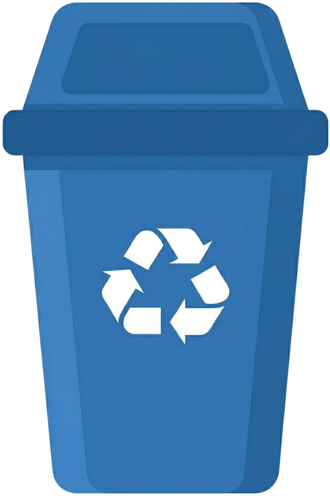
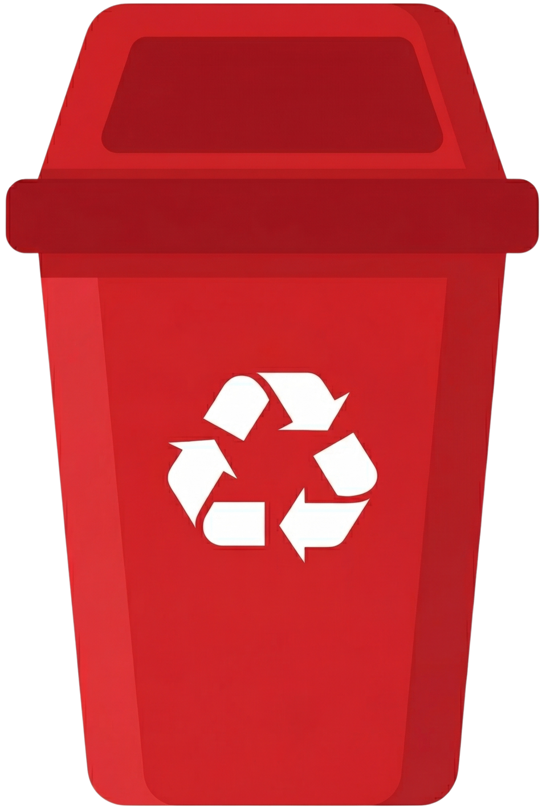
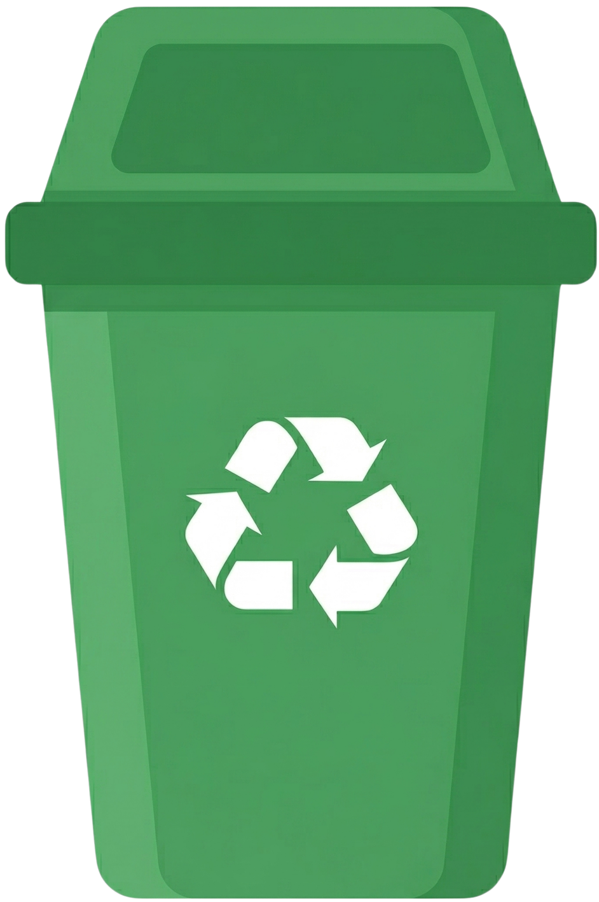
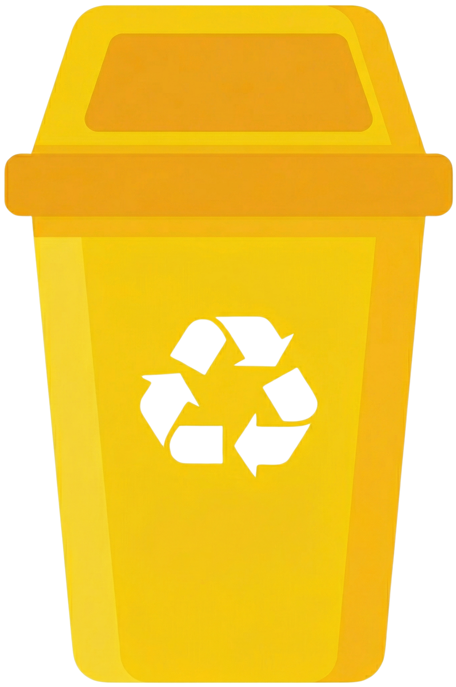
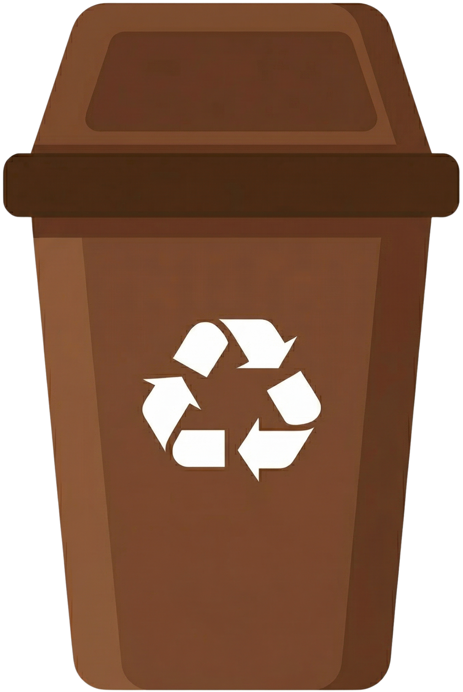

CÓDIGO DE CORES DAS LIXEIRAS
O Conselho Nacional do Meio Ambiente (CONAMA) estabeleceu um código de cores para facilitar a separação correta dos resíduos. Esse sistema padroniza as lixeiras utilizadas em escolas, empresas e espaços públicos, tornando mais simples a identificação do destino adequado de cada material.
Passe o mouse sobre cada lixeira para descobrir quais resíduos devem ser descartados nela.





